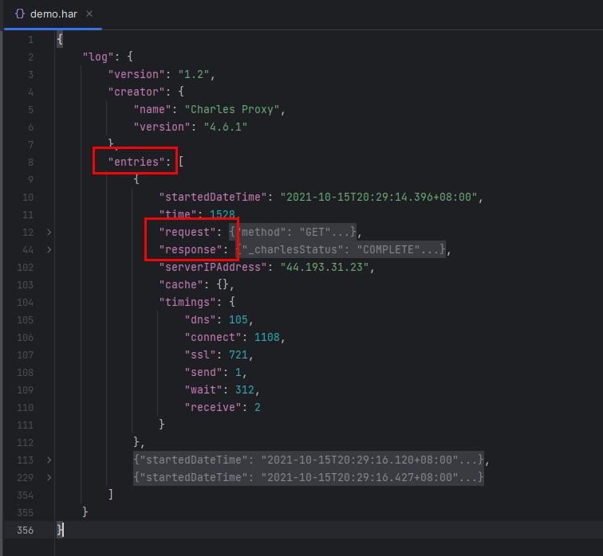
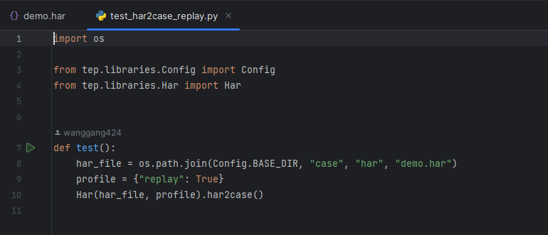
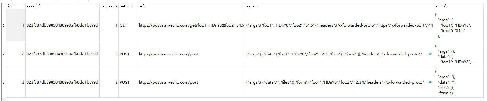
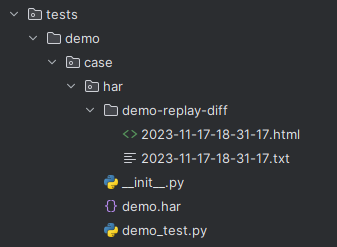
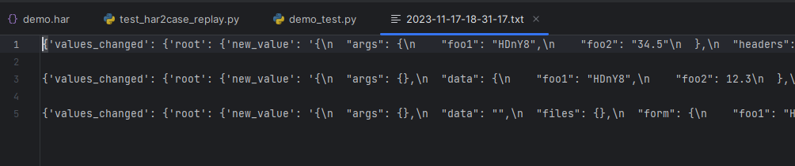
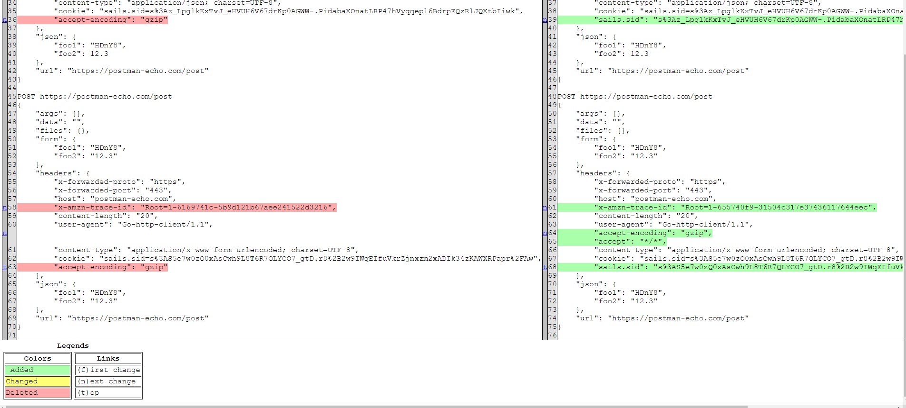
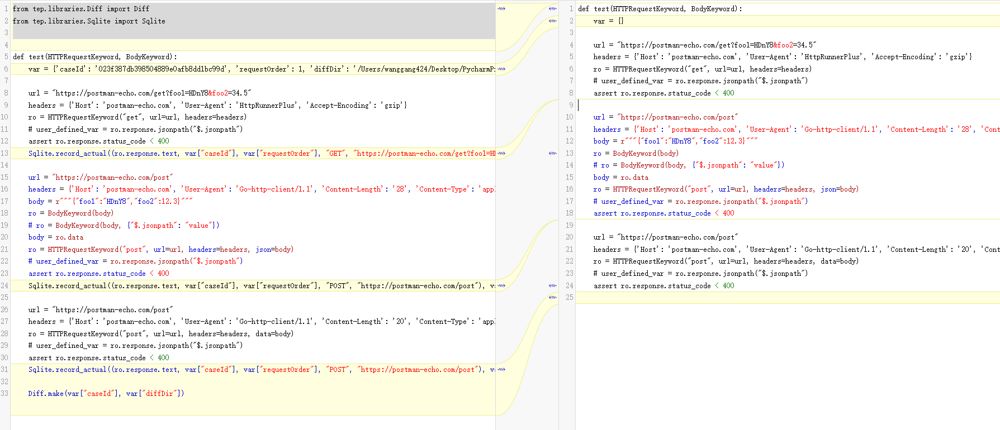

什么是 HAR 包？
HAR（HTTP Archive format），是一种JSON格式的存档格式文件，通用扩展名为 .har。

HAR 包是 JSON 格式的，打开后，重点关注entries里面的request和response，包含了请求和响应信息。
流量录制
怎么获取 HAR 包呢？可以网上搜索方法，浏览器 F12、抓包工具（Charles、Proxyman 等）都可以将 HTTP 请求导出为 HAR 包。
生产级别的流量录制很复杂，想要了解的话可以参考阿里开源项目：https://github.com/alibaba/jvm-sandbox-repeater
回放对比
本文重点介绍在导出 HAR 包后，怎么通过 Python 来实现回放对比。
使用介绍
一、将 HAR 包转换为 pytest 用例

har_file 为 har 包路径，profile 配置开启回放，调用 Har.har2case()方法将 HAR 包转换为 pytest 用例。
转换后会生成：
- demo_test.py 与 HAR 同名的 pytest 用例文件
- demo-replay-diff 对比结果目录，暂时为空
- sqlite.db 存储 HAR 包响应数据，标记为 expect
二、执行 pytest 用例
from tep.libraries.Diff import Diff
from tep.libraries.Sqlite import Sqlite
def test(HTTPRequestKeyword, BodyKeyword):
var = {'caseId': '023f387db398504889e0afb8dd1bc99d', 'requestOrder': 1, 'diffDir': '/Users/wanggang424/Desktop/PycharmProjects/tep/tests/demo/case/har/demo-replay-diff'}
url = "https://postman-echo.com/get?foo1=HDnY8&foo2=34.5"
headers = {'Host': 'postman-echo.com', 'User-Agent': 'HttpRunnerPlus', 'Accept-Encoding': 'gzip'}
ro = HTTPRequestKeyword("get", url=url, headers=headers)
# user_defined_var = ro.response.jsonpath("$.jsonpath")
assert ro.response.status_code < 400
Sqlite.record_actual((ro.response.text, var["caseId"], var["requestOrder"], "GET", "https://postman-echo.com/get?foo1=HDnY8&foo2=34.5"), var)
url = "https://postman-echo.com/post"
headers = {'Host': 'postman-echo.com', 'User-Agent': 'Go-http-client/1.1', 'Content-Length': '28', 'Content-Type': 'application/json; charset=UTF-8', 'Cookie': 'sails.sid=s%3Az_LpglkKxTvJ_eHVUH6V67drKp0AGWW-.PidabaXOnatLRP47hVyqqepl6BdrpEQzRlJQXtbIiwk', 'Accept-Encoding': 'gzip', 'sails.sid': 's%3Az_LpglkKxTvJ_eHVUH6V67drKp0AGWW-.PidabaXOnatLRP47hVyqqepl6BdrpEQzRlJQXtbIiwk'}
body = r"""{"foo1":"HDnY8","foo2":12.3}"""
ro = BodyKeyword(body)
# ro = BodyKeyword(body, {"$.jsonpath": "value"})
body = ro.data
ro = HTTPRequestKeyword("post", url=url, headers=headers, json=body)
# user_defined_var = ro.response.jsonpath("$.jsonpath")
assert ro.response.status_code < 400
Sqlite.record_actual((ro.response.text, var["caseId"], var["requestOrder"], "POST", "https://postman-echo.com/post"), var)
url = "https://postman-echo.com/post"
headers = {'Host': 'postman-echo.com', 'User-Agent': 'Go-http-client/1.1', 'Content-Length': '20', 'Content-Type': 'application/x-www-form-urlencoded; charset=UTF-8', 'Cookie': 'sails.sid=s%3AS5e7w0zQ0xAsCwh9L8T6R7QLYCO7_gtD.r8%2B2w9IWqEIfuVkrZjnxzm2xADIk34zKAWXRPapr%2FAw', 'Accept-Encoding': 'gzip', 'sails.sid': 's%3AS5e7w0zQ0xAsCwh9L8T6R7QLYCO7_gtD.r8%2B2w9IWqEIfuVkrZjnxzm2xADIk34zKAWXRPapr%2FAw'}
ro = HTTPRequestKeyword("post", url=url, headers=headers, data=body)
# user_defined_var = ro.response.jsonpath("$.jsonpath")
assert ro.response.status_code < 400
Sqlite.record_actual((ro.response.text, var["caseId"], var["requestOrder"], "POST", "https://postman-echo.com/post"), var)
Diff.make(var["caseId"], var["diffDir"])
执行时会记录实际请求响应，存入 sqlite 数据库，标记为 actual。

同时进行 JSON 字段对比和文本对比，分别生成字段对比.txt和文本对比.html。



原理解析
源码：https://github.com/dongfanger/tep.git
一、转换
通过 haralyzer 库解析 HAR 包，获取到 request 和 response，再拼装成 pytest 用例。
实现文件：tep/libraries/Har.py
def _make_case(self):
var = self._prepare_var()
steps = self._prepare_steps()
content = Har.TEMPLATE.format(var=var, steps=steps)
if self.replay:
content = Har.TEMPLATE_IMPORT_REPLAY + content
if not os.path.exists(self.replay_dff_dir):
os.makedirs(self.replay_dff_dir)
content += Har.TEMPLATE_DIFF
with open(self.case_file, "w") as f:
f.write(content)
def _prepare_step(self, entry) -> list:
logger.info("{} {} Convert step", entry.request.method, entry.request.url)
step = Step()
self._make_request_method(step, entry)
self._make_request_url(step, entry)
self._make_request_headers(step, entry)
self._make_request_body(step, entry)
self._make_before_param(step, entry)
self._make_after_extract(step, entry)
self._make_after_assert(step, entry)
if self.replay:
self._make_after_replay(step, entry)
self._save_replay(step, entry) # Save replay data to sqlite
return self._make_statement(step, entry)
def _request_param(self, step, entry) -> str:
param = ""
mime_type = entry.request.mimeType
b = 'data=body' if mime_type and mime_type.startswith("application/x-www-form-urlencoded") else 'json=body'
if step.request.method == "GET":
param = '"get", url=url, headers=headers, params=body' if step.request.body else '"get", url=url, headers=headers'
if step.request.method == "POST":
param = '"post", url=url, headers=headers, '
param += b
if step.request.method == "PUT":
param = '"put", url=url, headers=headers, '
param += b
if step.request.method == "DELETE":
param = '"delete", url=url, headers=headers'
if self.profile.get("http2", False):
param += ', http2=True'
return param
转换过程中，将响应 text 存入 sqlite 数据库中：
def _save_replay(self, step, entry):
Sqlite.create_table_replay()
data = (
self.case_id,
self.request_order,
step.request.method,
step.request.url,
self._decode_text(entry)
)
Sqlite.insert_into_replay_expect(data)
self.request_order += 1
二、存储
通过 sqlite 数据库存储。
实现文件：tep/libraries/Sqlite.py
class Sqlite:
DB_FILE = "sqlite3.db"
@staticmethod
def execute(sql: str, data: tuple = None):
os.chdir(Config.BASE_DIR)
conn = sqlite3.connect(Sqlite.DB_FILE)
if data:
conn.execute(sql, data)
else:
conn.execute(sql)
conn.commit()
conn.close()
@staticmethod
def create_table_replay():
Sqlite.execute("""CREATE TABLE IF NOT EXISTS replay
(id INTEGER PRIMARY KEY AUTOINCREMENT,
case_id TEXT NOT NULL,
request_order INTEGER NOT NULL,
method TEXT NOT NULL,
url TEXT NOT NULL,
expect TEXT NOT NULL,
actual TEXT)""")
@staticmethod
def insert_into_replay_expect(data: tuple):
if not Sqlite.is_replay_existed(data):
Sqlite.execute("INSERT INTO replay(case_id, request_order, method, url, expect) VALUES (?, ?, ?, ?, ?)", data)
三、记录
通过 profile 开关控制是否开启回放，对比开启前后用例差异：

开启回放，是在每个步骤后置中，添加了 Sqlite 记录响应 text，并在最后执行 Diff。
记录实现文件：tep/libraries/Sqlite.py
@staticmethod
def update_replay_actual(data: tuple):
Sqlite.execute("UPDATE replay SET actual = ? WHERE case_id = ? AND request_order = ? AND method = ? AND url = ?", data)
@staticmethod
def record_actual(data: tuple, var: dict):
Sqlite.update_replay_actual(data)
var["requestOrder"] += 1
四、对比
做了 2 个对比，一是通过 deepdiff 库进行 JSON 字段对比，二是通过 difflib 库进行文本对比。
实现文件：tep/libraries/Diff.py
1、JSON 字段对比，每个请求对比结果放入列表中，输出到 TXT 文本
2、文本对比，从数据库取出 expect 和 actual 并格式化，所有响应 text 拼接到一个字符串进行对比，输出到 HTML 文件
@staticmethod
def make(case_id: str, diff_dir: str):
results = Sqlite.get_expect_actual(case_id)
diffs = []
expect_text = ""
actual_text = ""
for row in results:
expect, actual, method, url = row
diff = Diff.make_deepdiff(expect, actual)
diffs.append(diff)
expect_text += Diff._format_json_str(expect, method, url)
actual_text += Diff._format_json_str(actual, method, url)
diff_html = Diff.make_difflib(expect_text, actual_text)
Diff._output_file(diffs, diff_html, diff_dir)
@staticmethod
def make_deepdiff(expect: str, actual: str) -> str:
diff = DeepDiff(expect, actual)
return str(diff)
@staticmethod
def make_difflib(lines1: str, lines2: str) -> str:
diff = difflib.HtmlDiff().make_file(lines1.splitlines(), lines2.splitlines())
return diff
@staticmethod
def _format_json_str(text: str, method: str, url: str) -> str:
s = json.dumps(json.loads(text), indent=4, ensure_ascii=False)
s = "{} {}\n{}\n\n".format(method, url, s)
return s
@staticmethod
def _output_file(diffs: list, diff_html: str, diff_dir: str):
with open(os.path.join(diff_dir, Diff.DIFF_TXT_FILE), "w") as f:
f.write("\n\n".join(diffs))
styled_html = f"<style>td {{width: 50%;}}</style>\n{diff_html}"
with open(os.path.join(diff_dir, Diff.DIFF_HTML_FILE), "w") as f:
f.write(styled_html)
流量录制回放已经成为一种重要的测试手段，既可以快速生成自动化用例，也可以回放对比开发和线上差异，学习起来吧。